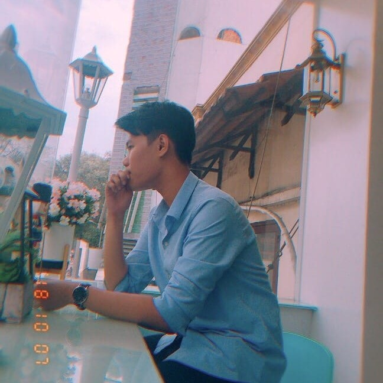
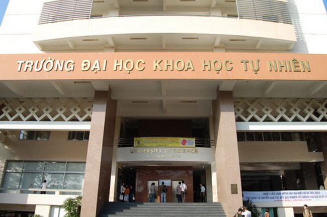

About
Welcome to my portfolio! I am a student in Ho Chi Minh University of Science (VietNam) collaborated with Auckland University of Technology (New Zealand). My major at university is Bachelor of Computer & Information Science concentrated on IT Service. I study total of 30 subjects in 4 years of which 7 subjects are taught by lecturers from Auckland University of Technology and the remaining subjects are taught by lecturers from University of Science in VietNam.
I used to be a Xamarin developer with the main job focusing on Front-end. I am currently a researcher in Computer Vision at my university. My research concentrates on Deep Generative Models and how to apply them to re-create the works of art. My supervisors are Doctor Nguyen Ngoc Thao and Master Cao Xuan Nam, both of them are the lecturers at University of Science. I love doing research because it gives me endless inspiration and strange excitement. I have tried to do many jobs in the software field but it did not bring me satisfaction, only when I came to research in Artificial Intelligence, I become who I am. My goal for researching is to have research papers published in international conferences such as CVPR, ICCV, ACCV, ICIP, ICIAP, CAIP, etc. and conferences in VietNam such as VJCS, VJST, etc. to contribute a part of my research to the development of my homeland. For the future, I want to be a researcher in Computer Vision and a lecturer at University of Science in VietNam.
Experiences
Research Assistant at Ho Chi Minh University of Science. (April 2021 – present)
Xamarin Developer part-time at BSD Solutions. (July 2019 – March 2020)
Educations

Academic Awards & Certificates
Distinctive Academic Performance in University (2018-2019, 2019-2020): Certificate of merit for excellent students with average score above 8.
Coursera:
Tableau:
Linkedin Learning:
Languages
English
Vietnamese
Miscellaneous
Here are some facts about me: